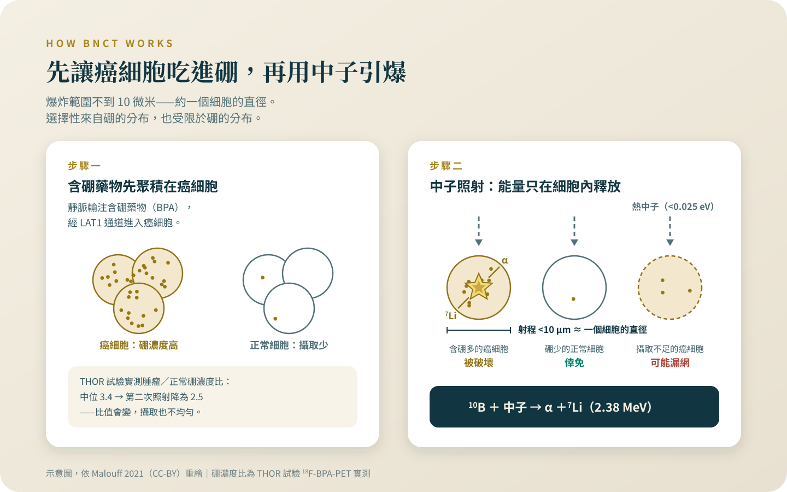

BNCT：不是用瞄準的放療
它的瞄準是生物的：選擇性住在硼的分布裡，這既是聰明之處也是限制。日本核准的是一個特定適應症；在台灣，它是試驗與恩慈途徑，不是常規治療。
這篇把三個常被混在一起的東西拆開：物理上真實的細胞層級選擇性、日本用一個 21 人試驗換來的藥證、台灣一條有公告價格的恩慈途徑。拆完你會發現，需要提防的往往不是技術本身，是標題。
警語一（排擠效應）：這個專題裡的治療，多數是自費、多數在標準治療之外。做決定之前要先知道，它們排擠掉的通常不是時間，是三樣真正有價值的東西：還沒用完的標準治療、後線會用到的錢、以及臨床試驗的資格（很多試驗會排除近期接受過其他實驗性治療的人）。還有一樣更難察覺——體能。在一個沒有效果的療程裡耗掉的體力，等到真正有用的選項出現時，可能已經撐不住了。所以問題不是「這個值不值得試」，是「做了這個，我放棄掉什麼」。
BNCT 的恩慈途徑有官方公告的價格：首次治療 120 萬元、之後每次 100 萬元[1]——這筆錢的大小，剛好就是後線自費藥物、或支撐你走完一個臨床試驗會動用到的那筆錢。
警語二（找對的醫師）：這一類決定不要一個人做，也不要只聽提供這項治療的人說。你要找的是一個願意告訴你「這個不適合你」的醫師——如果對方從頭到尾沒有說過任何一句「不適合誰」，那不是諮詢，是推銷。
先說我的位置：質子與熱治療都是我自己領域內的技術，我服務的醫院也有相關設備。所以這個專題的每一條線，我畫得比別人更緊，不是更鬆。
「不用瞄準」是什麼意思：兩個步驟
光子、質子、重粒子，邏輯都是幾何的：把射束對準腫瘤。BNCT 不同，它分兩步。第一步，靜脈輸注含硼藥物，讓腫瘤細胞把硼-10 吃進去；第二步照射低能量熱中子，硼-10 捕獲中子後分裂成 α 粒子和鋰-7，能量釋放在不到 10 微米內——約一顆細胞的直徑，殺傷被鎖在吃了硼的那顆細胞裡[2]。硼藥 BPA 藉胺基酸運輸蛋白 LAT1 進入細胞，侵襲性腫瘤的 LAT1 表現偏高，這是選擇性的來源[3]。所以它的「瞄準」是生物的，不是幾何的：中子照野同時涵蓋腫瘤與周邊正常組織，選擇性完全取決於哪些細胞吃進了硼[2]。
選擇性在哪裡，弱點就在哪裡
設計漂亮的地方跟限制是同一件事：硼吃得多的細胞被摧毀；吃得少的腫瘤細胞，物理上就打不到。而攝取不均勻、會變動：台灣的前瞻試驗用正子攝影實測腫瘤對正常組織的硼濃度比，第一次照射的中位數（數值排開取正中間）是 3.4，隔 28 天的第二次掉到 2.5；攝取太低的病灶，劑量計算上拿不到處方劑量[4]。「不用瞄準」也不等於不傷正常組織。

日本的藥證，是用一個 21 人的試驗換來的
關鍵試驗 JHN002 是開放性第二期，收 21 位復發或局部晚期頭頸癌，用加速器中子源加硼藥，主要終點客觀緩解率 71%——客觀緩解率是腫瘤明顯縮小的病人比例，不等於治癒，也不等於活得比較久[5]。日本藥證機關 PMDA 於 2020 年 3 月據此核准硼藥 borofalan，適應症是「無法切除的局部晚期或局部復發頭頸癌」，同年 6 月納入日本健保；完整的法規與給付脈絡在〈核准、給付、有效，是三件不同的事〉，這裡只留一行：在日本、對這一個適應症，它是核准且有給付的正式治療[6][7]。上市後全登錄收了 162 位病人，常見急性不良事件是高澱粉酶血症 84.0%、口腔炎 51.2%、落髮 49.4%[7]。這代表安全性在真實世界大致重現、這個適應症站得住；不代表 BNCT 是對癌症通用的背書——到 2026 年 2 月為止，藥證上的適應症就只有這一項[6]。
反應快，不等於守得住：膠質瘤與台灣的試驗
復發惡性膠質瘤在日本有個 27 人的單臂第二期：一年存活率 79.2%、中位存活 18.9 個月，數字亮眼，但對照是歷史資料——沒有同時隨機分組的對照，只能跟過去別的研究比；而且同一批病人以影像標準判定的中位無惡化存活只有 0.9 個月，判讀被腦水腫與後續用藥干擾[8]。膠質瘤到今天沒有任何藥證[6]。台灣自己的前瞻試驗更直白：17 位復發頭頸癌病人 6 位完全緩解、6 位部分緩解，但兩年局部區域控制只有 28%[4]；後續合併影像導引放療的試驗，緩解率 64%，一年局部無惡化存活 21%，作者自己寫，復發多在照野內與邊緣，未來應改與放療以外的方式合併[9]。試驗之外，2026 年發表的台灣復發鼻咽癌恩慈系列 10 位，可評估者緩解率 25%，1 位發生顳葉壞死[10]——族群一換，數字就換，不能拿頭頸鱗癌的七成想像自己。
「攻克」與原始來源之間的距離
2026 年 8 月底有一則「BNCT 治療乳癌」的新聞。拆開來看：底層是一篇已發表的 4 位病人回溯性病例系列——全是多線治療後的三陰性乳癌，論文自述樣本小、回溯性、追蹤短，結果應視為初步、需要前瞻驗證[11]——加上 5 位恩慈治療病人；發布成果的官方新聞稿，標題也用了「全台第一」這樣的熱句，但內文是謹慎的：明說期盼累積病例後再推動人體臨床試驗，全文沒有出現「攻克」兩個字[12]。「攻克」出現在新聞標題上。教訓有兩層。一：個位數的恩慈個案系列，被標題寫成攻克——量級被放大的位置在標題，不在研究本身；那幾位病人的腫瘤反應是真的，發表也是真的。二：對你更有用——回到原始來源、往內文和論文裡讀，通常比任何一層標題誠實：論文自己說了「初步」，新聞稿內文自己說了「試驗還在後頭」。
今天在台灣，門在哪裡、有多寬
台灣現行的中子源是研究用反應爐，不是醫院的治療機。門有兩扇：一是學術性臨床試驗；二是官方頁面稱為「緊急治療」、屬專案性質的恩慈途徑，2017 年起累計治療 629 人次[13]，由數家合作醫院評估、轉介[14]，收費依 2024 年 6 月 13 日生效的官方收費辦法：首次治療 120 萬元、計畫性後續照射每次 100 萬元[1]。它不是健保項目，也不是掛號就排得到的常規自費項目；官方頁面沒有寫明它在法規上的確切類別，我查不到可以引用的正式條文，就不替它命名。兩件事要分開：照射系統這個「器材」2023 年 6 月拿到衛福部醫療器材許可證，不等於「BNCT 治癌」拿到適應症核准；硼藥在台灣沒有藥證[15]；加速器型的 BNCT 中心 2025 年 8 月才動工、預計 2027 年啟用，官方新聞稿自己寫著期待未來成為衛福部許可的正式治療項目——意思是，現在還不是，也還不能預約[16]。能不能照，由醫師以正子攝影實測硼攝取、連同病灶條件判斷，不是付得起就能排[4]。
一百二十萬元，排擠掉的是什麼
恩慈途徑的前提是標準治療已用盡或不適用；還沒走完標準治療的人，本來就不是它的對象。對真的走到後線的人，這筆費用的量級[1]，跟後線自費藥物、或支撐你參加臨床試驗的開銷，出自同一個口袋。我不會替你排順序；但簽字前，把同一筆錢的另外兩三種用法白紙黑字列出來比過一次。還要校準期待：常被引用的 70.2% 緩解率是跨癌別、以人次計的緊急治療統計，不是前瞻試驗的療效[13]；前面 25% 的鼻咽癌系列就是提醒：你的處境可能離平均很遠[10]。
誰可以把 BNCT 放上桌，誰不該被推上桌
可以合理談 BNCT 的，是兩種人：符合日本核准適應症的病人——無法切除的局部晚期或局部復發頭頸癌，尤其是照過完整劑量、手術與再照射皆不可行者[5]（但要先知道：日本的給付適用日本的被保險人，外國病人是全額自費，出發前請先讀〈核准、給付、有效，是三件不同的事〉的醫療觀光段）；以及在台灣經原治療團隊多專科討論、符合恩慈轉介條件且硼攝取評估可行的病人[14][4]。不適合的是其他所有情況：任何常見癌症還沒走完標準治療的階段；還有任何被告知「這是萬用的標靶中子，什麼腫瘤都能打」的人——沒有這種東西：選擇性完全建立在硼攝取上，攝取不好，選擇性就不存在[2][4]。這個專題每一篇我都講同一句話：對絕大多數常見癌症的病人，決定結果的是期別、亞型、和有沒有把療程完整走完，不是有沒有用到中子。下次門診把這個問題直接問出口：「以我的病況，BNCT 連討論的前提符不符合？」願意正面回答這一題的醫師，就是警語裡說的、你要找的那種醫師。
查證日期：2026 年 8 月。
替復發頭頸癌或腦瘤家人查 BNCT 的你，順序是：先跟原治療團隊確認標準選項是否真的用盡，再請團隊評估恩慈轉介的條件與硼攝取；然後把官方收費和同一筆錢的其他用法並排列出來，帶去門診談。
參考資料
國立清華大學原子科學技術發展中心。國立清華大學使用THOR進行硼中子捕獲治療(BNCT)醫療服務收費辦法。（2024-06-13 起適用；查證日 2026-08-29。）
Malouff, T. D., Seneviratne, D. S., Ebner, D. K., et al. (2021). Boron Neutron Capture Therapy: A Review of Clinical Applications. Frontiers in Oncology, 11, 601820. DOI: 10.3389/fonc.2021.601820
Zheng, X., Pan, J., Lin, D., & Shao, W. (2025). L-type amino acid transporter 1 in enhancing boron neutron capture therapy: Mechanisms, challenges and future directions (Review). International Journal of Molecular Medicine, 56(5), 170. DOI: 10.3892/ijmm.2025.5611
Wang, L. W., Chen, Y. W., Ho, C. Y., et al. (2016). Fractionated Boron Neutron Capture Therapy in Locally Recurrent Head and Neck Cancer: A Prospective Phase I/II Trial. International Journal of Radiation Oncology, Biology, Physics, 95(1), 396–403. DOI: 10.1016/j.ijrobp.2016.02.028
Hirose, K., Konno, A., Hiratsuka, J., et al. (2021). Boron neutron capture therapy using cyclotron-based epithermal neutron source and borofalan (¹⁰B) for recurrent or locally advanced head and neck cancer (JHN002). Radiotherapy and Oncology, 155, 182–187. DOI: 10.1016/j.radonc.2020.11.001
PMDA（日本獨立行政法人醫藥品醫療機器總合機構）。List of Approved Products — New Drugs Approved in Japan (April 2004 to February 2026)。（查證日 2026-08-29。）
Sato, M., Hirose, K., Takeno, S., et al. (2024). Safety of Boron Neutron Capture Therapy with Borofalan(¹⁰B) and Its Efficacy on Recurrent Head and Neck Cancer: Real-World Outcomes from Nationwide Post-Marketing Surveillance. Cancers, 16(5), 869. DOI: 10.3390/cancers16050869
Kawabata, S., Suzuki, M., Hirose, K., et al. (2021). Accelerator-based BNCT for patients with recurrent glioblastoma: a multicenter phase II study (JG002). Neuro-Oncology Advances, 3(1), vdab067. DOI: 10.1093/noajnl/vdab067
Wang, L. W., Liu, Y. H., Chu, P. Y., et al. (2023). Boron Neutron Capture Therapy Followed by Image-Guided Intensity-Modulated Radiotherapy for Locally Recurrent Head and Neck Cancer: A Prospective Phase I/II Trial. Cancers, 15(10), 2762. DOI: 10.3390/cancers15102762
Wang, L. W., Hsueh Liu, Y. W., Peir, J. J., et al. (2026). Compassionate boron neutron capture therapy for locally recurrent nasopharyngeal cancer: A retrospective study. Journal of the Chinese Medical Association, 89(2), 109–115. DOI: 10.1097/jcma.0000000000001339
Liao, H. R., Chen, Y. W., Hsieh, C. H., et al. (2026). Exploring the Use of Boron Neutron Capture Therapy for Recurrent Breast Cancer and Brain Metastases: A Case Series. Advances in Radiation Oncology, 11(5), 101998. DOI: 10.1016/j.adro.2026.101998
國立清華大學（官方新聞，2026-08-27）。全台第一！清華以BNCT治療乳癌 患者腫瘤明顯縮小。（查證日 2026-08-29。）
國立清華大學原子科學技術發展中心。緊急治療（THOR 執行 BNCT 治療統計）。（頁面標示統計至 2026 年；查證日 2026-08-29。）
國立清華大學原子科學技術發展中心。BNCT緊急治療相關事宜（BNCT Treatment Information）。（查證日 2026-08-29。）
國立清華大學（官方新聞，2023-08-16）。清華BNCT獲醫材許可證 治療瑞士名作家腦癌。（查證日 2026-08-29。）
臺北榮民總醫院（官方新聞，2025-08-18）。北榮硼中子捕獲治療中心動工 臺灣癌症治療邁向國際頂尖。（查證日 2026-08-29。）
本文為一般性衛教說明，整理自公開發表的研究與官方公告，不能取代面對面的診療。研究結果適用的族群通常有嚴格條件，是否適用於你的情況，請與你的主治醫師討論。請勿依據本文自行調整、中斷或更換治療。
← 回到次世代治療專題